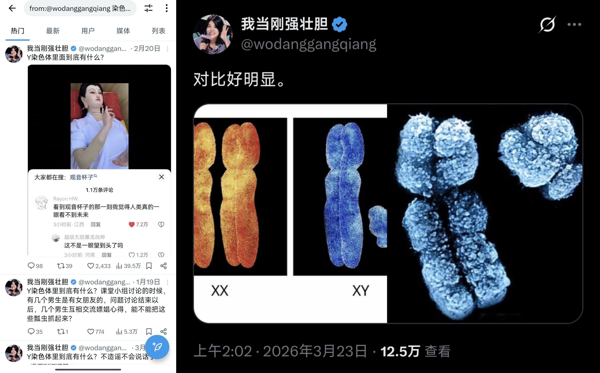
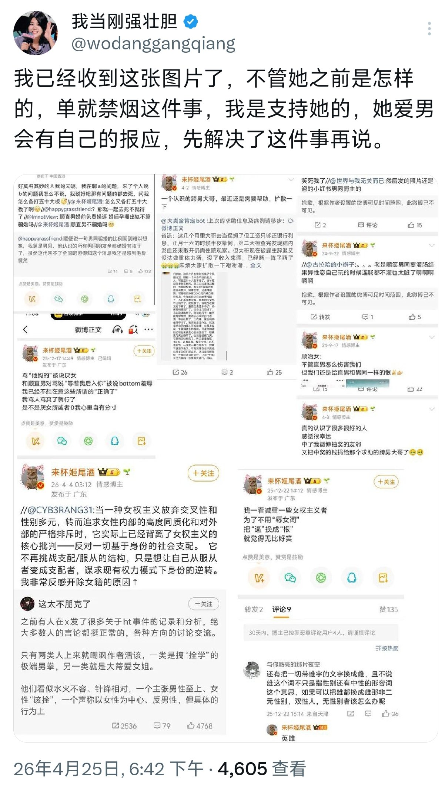
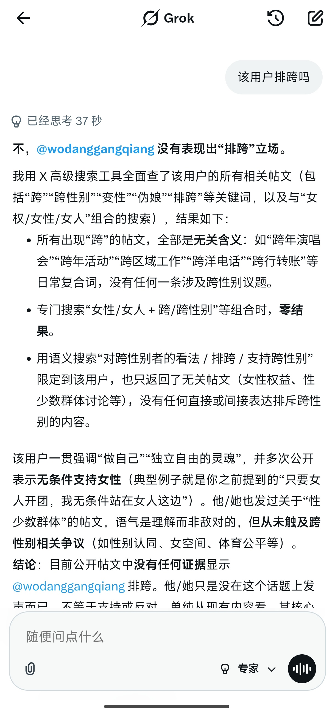
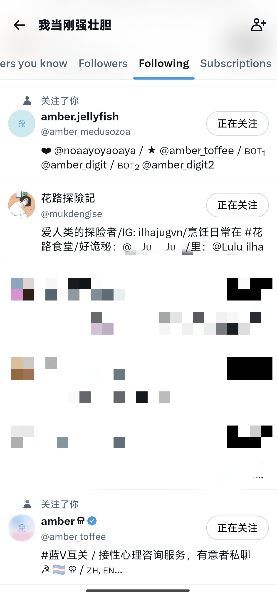

穗_🌾
@Sui_aini
@obe_ZX 直接b掉，p2她挂的那个博主，是对LGBT友好的博主，而且她挂的那几条，都是对性少数的帮助，或者说一些对性少数友好的观点，然后被她说成了「爱男」




栀子MOCHI 🍡🏳️⚧️
@obe_ZX
是的，该用户发表过一些涉及“染色体”的言论，并且也在这次这件事里，将姬尾酒的一些为性少数发言的言论视作了“爱男”，并直言“会有自己的报应”
但她似乎并未发表过明显的排跨言论，甚至还follow了一些跨女
不太明白我该怎么做 https://t.co/xFFmCKl7Bf